Script per l'analisi e controllo di un doppio pendolo inverso su carrello mobile (sistema DPIC)
Pulizia dello spazio di lavoro
clear
close all
clc
Creazione delle variabili simboliche per le caratteristiche del sistema (variabili nel tempo e costanti)
syms x0(t) t1(t) t2(t) m0 m1 m2 J1 J2 L1 L2 g % Posizione del CoM del primo braccio x1 = x0 + L1 / 2 * sin(t1); y1 = - L1 / 2 * cos(t1); % Posizione del CoM del secondo braccio x2 = x1 + L1 / 2 * sin(t1) + L2 / 2 * sin(t2); y2 = y1 - L1 / 2 * cos(t1) - L2 / 2 * cos(t2); % Posizione terminale del DPI xt = x2 + L2 / 2 * sin(t2); yt = y2 - L2 / 2 * cos(t2); % Calcolo delle velocità lineari v0 = diff(x0); vx1 = diff(x1); vy1 = diff(y1); vx2 = diff(x2); vy2 = diff(y2); % Calcolo delle velocità angolari w1 = diff(t1); w2 = diff(t2);
Calcolo del lagrangiano LGR = KE - PE e derivate parziali rispetto alle posizioni 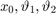 e alle velocità 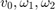
KE = .5 * (m0 * v0 ^ 2 ... + m1 * vx1 ^ 2 + m1 * vy1 ^ 2 ... + m2 * vx2 ^ 2 + m2 * vy2 ^ 2 ... + J1 * w1 ^ 2 + J2 * w2 ^ 2); PE = - m1 * g * y1 - m2 * g * y2; LGR = KE - PE;
Rimpiazzo le accelerazioni degli stati con variabili simboliche (utile per semplificare l'espressione di queste ultime in termini delle altre variabili di stato)
syms a0 u1 u2 u(t); ddQ = [a0, u1, u2];
Calcolo delle forze agenti sul sistema

F = subs([ ... diff(diff(LGR, v0)) - diff(LGR, x0), ... diff(diff(LGR, w1)) - diff(LGR, t1), ... diff(diff(LGR, w2)) - diff(LGR, t2) ... ], [diff(v0), diff(w1), diff(w2)], ddQ); F = simplify(F);
Scelgo come forze esterne agenti sul sistema la forza (attuabile) sul carrello 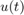 e le forze di disspazione che sono lineari nelle velocità 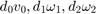
syms d0 d1 d2; sys = F == [u, 0, 0];
Nota: il sistema è non lineare nelle variabili di stato 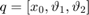, tantomeno nelle variabili estese ![$Q = [x_0, \vartheta_1, \vartheta_2, v_0, \omega_1, \omega_2]$](MainForProject_eq07683230866840416760.png) , ma può comunque essere espresso nella forma
, ma può comunque essere espresso nella forma
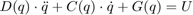
dove 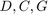 sono matrici mentre 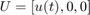
Per ottenere le matrici sostituisco i termini non lineari in 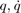 con nuove variabili simboliche w1, w2, W1, W2, c1, s1, c2, s2 le ricavabili dalla seguente subs
syms w1(t) W1 w2(t) W2 c1 s1 c2 s2 cd sd; sys = subs(sys, [ ... diff(t1, t) ^ 2, diff(t2, t) ^ 2, cos(t1), sin(t1), cos(t2), sin(t2), cos(t1 - t2), sin(t1 - t2)], ... [w1 * W1, w2 * W2, c1, s1, c2, s2, cd, sd] ... ); disp(transpose(sys));
a0*m0 + a0*m1 + a0*m2 + (L1*c1*m1*u1)/2 + L1*c1*m2*u1 + (L2*c2*m2*u2)/2 - (L1*W1*m1*s1*w1(t))/2 - L1*W1*m2*s1*w1(t) - (L2*W2*m2*s2*w2(t))/2 == u(t)
J1*u1 + (L1^2*m1*u1)/4 + L1^2*m2*u1 + (L1*a0*c1*m1)/2 + L1*a0*c1*m2 - (L1*g*m1*s1)/2 - L1*g*m2*s1 + (L1*L2*cd*m2*u2)/2 + (L1*L2*W2*m2*sd*w2(t))/2 == 0
J2*u2 + (L2^2*m2*u2)/4 + (L2*a0*c2*m2)/2 - (L2*g*m2*s2)/2 + (L1*L2*cd*m2*u1)/2 - (L1*L2*W1*m2*sd*w1(t))/2 == 0
symbolic function inputs: t
Avendo fatto questa sostituzione possiamo usare la funzione equationsToMatrix per ottenere le matrici
Per ottenere 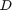 scegliamo variabili da linearizzare come prodotto di matrici 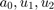; per 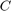 scegliamo 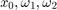 (non scegliamo 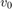 in quanto comunque non compare nell'equazione e a quanto sembra MATLAB non riconosce diff(x0(t), t) come una variabile simbolica); mentre per 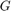 scegliamo 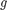 (per ispezione visiva i termini lineari in questo sistema modificato hanno in comune l'accelerazione gravitazionale )
D = equationsToMatrix(sys, ddQ); C = equationsToMatrix(sys, [x0(t), w1(t), w2(t)]); G = g * equationsToMatrix(sys, g);
Volendo esprimere il sistema del secondo ordine dato da 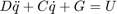 come un sistema del primo ordine possiamo svolgere innanzitutto risolvere l'equazione in termini di 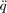:
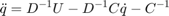 Definendo nuova variabile di stato 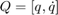 il sistema può essere scritto come
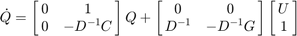
Per rendere matrici 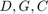 utilizzabili in Simulink possiamo sostituire loro variabili simboliche di partenza
D = subs(D, [ ... w1, W1, w2, W2, c1, s1, c2, s2, cd, sd... ], [ ... diff(t1, t), diff(t1, t), diff(t2, t), diff(t2, t), cos(t1), sin(t1), cos(t2), sin(t2), cos(t1 - t2), sin(t1 - t2)... ]); C = subs(C, [ ... w1, W1, w2, W2, c1, s1, c2, s2, cd, sd... ], [ ... diff(t1, t), diff(t1, t), diff(t2, t), diff(t2, t), cos(t1), sin(t1), cos(t2), sin(t2), cos(t1 - t2), sin(t1 - t2)... ]); G = subs(G, [ ... w1, W1, w2, W2, c1, s1, c2, s2, cd, sd... ], [ ... diff(t1, t), diff(t1, t), diff(t2, t), diff(t2, t), cos(t1), sin(t1), cos(t2), sin(t2), cos(t1 - t2), sin(t1 - t2)... ]);
Calcolo le matrici del sistema di primo grado nelle variabili 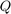
I = inv(D); H = - I * C; J = - I * G; A = [zeros(3, 3), eye(3); zeros(3, 3), H]; B = [zeros(3, 4); I, J];
Definisco i parametri per la simulazione de modello Simulink
states = [diff(x0(t), t), diff(t1(t), t), diff(t2(t), t), x0(t), t1(t), t2(t)]; constsSym = [m0, m1, m2, L1, L2, J1, J2, g]; constsReal = [1.5, .5, .75, .5, .75, 1 / 3 * .5 * .5 ^ 2 , 1 / 3 * .75 * .75 ^ 2, 9.8]; syms X0 T1 T2 V0 W1 W2; newstates = [V0 W1 W2 X0 T1 T2]; functA = subs(A, [constsSym, states], [constsReal, newstates]) functB = subs(B, [constsSym, states], [constsReal, newstates])
functA = [0, 0, 0, 1, 0, 0] [0, 0, 0, 0, 1, 0] [0, 0, 0, 0, 0, 1] [0, 0, 0, 0, (W1*sin(T1)*((81*cos(T1 - T2)^2)/256 - 525/512))/(2*((63*cos(T1)^2)/64 + (675*cos(T2)^2)/2048 + (891*cos(T1 - T2)^2)/1024 - (81*cos(T1)*cos(T2)*cos(T1 - T2))/128 - 5775/2048)) + (9*W1*sin(T1 - T2)*((75*cos(T2))/128 - (9*cos(T1)*cos(T1 - T2))/16))/(32*((63*cos(T1)^2)/64 + (675*cos(T2)^2)/2048 + (891*cos(T1 - T2)^2)/1024 - (81*cos(T1)*cos(T2)*cos(T1 - T2))/128 - 5775/2048)), (9*W2*sin(T2)*((81*cos(T1 - T2)^2)/256 - 525/512))/(32*((63*cos(T1)^2)/64 + (675*cos(T2)^2)/2048 + (891*cos(T1 - T2)^2)/1024 - (81*cos(T1)*cos(T2)*cos(T1 - T2))/128 - 5775/2048)) - (9*W2*sin(T1 - T2)*((63*cos(T1))/64 - (81*cos(T2)*cos(T1 - T2))/256))/(32*((63*cos(T1)^2)/64 + (675*cos(T2)^2)/2048 + (891*cos(T1 - T2)^2)/1024 - (81*cos(T1)*cos(T2)*cos(T1 - T2))/128 - 5775/2048))] [0, 0, 0, 0, (W1*sin(T1)*((63*cos(T1))/64 - (81*cos(T2)*cos(T1 - T2))/256))/((63*cos(T1)^2)/64 + (675*cos(T2)^2)/2048 + (891*cos(T1 - T2)^2)/1024 - (81*cos(T1)*cos(T2)*cos(T1 - T2))/128 - 5775/2048) + (9*W1*sin(T1 - T2)*((99*cos(T1 - T2))/64 - (9*cos(T1)*cos(T2))/16))/(16*((63*cos(T1)^2)/64 + (675*cos(T2)^2)/2048 + (891*cos(T1 - T2)^2)/1024 - (81*cos(T1)*cos(T2)*cos(T1 - T2))/128 - 5775/2048)), (9*W2*sin(T2)*((63*cos(T1))/64 - (81*cos(T2)*cos(T1 - T2))/256))/(16*((63*cos(T1)^2)/64 + (675*cos(T2)^2)/2048 + (891*cos(T1 - T2)^2)/1024 - (81*cos(T1)*cos(T2)*cos(T1 - T2))/128 - 5775/2048)) - (9*W2*sin(T1 - T2)*((81*cos(T2)^2)/256 - 693/256))/(16*((63*cos(T1)^2)/64 + (675*cos(T2)^2)/2048 + (891*cos(T1 - T2)^2)/1024 - (81*cos(T1)*cos(T2)*cos(T1 - T2))/128 - 5775/2048))] [0, 0, 0, 0, (W1*sin(T1)*((75*cos(T2))/128 - (9*cos(T1)*cos(T1 - T2))/16))/((63*cos(T1)^2)/64 + (675*cos(T2)^2)/2048 + (891*cos(T1 - T2)^2)/1024 - (81*cos(T1)*cos(T2)*cos(T1 - T2))/128 - 5775/2048) + (9*W1*sin(T1 - T2)*(cos(T1)^2 - 275/96))/(16*((63*cos(T1)^2)/64 + (675*cos(T2)^2)/2048 + (891*cos(T1 - T2)^2)/1024 - (81*cos(T1)*cos(T2)*cos(T1 - T2))/128 - 5775/2048)), (9*W2*sin(T2)*((75*cos(T2))/128 - (9*cos(T1)*cos(T1 - T2))/16))/(16*((63*cos(T1)^2)/64 + (675*cos(T2)^2)/2048 + (891*cos(T1 - T2)^2)/1024 - (81*cos(T1)*cos(T2)*cos(T1 - T2))/128 - 5775/2048)) - (9*W2*sin(T1 - T2)*((99*cos(T1 - T2))/64 - (9*cos(T1)*cos(T2))/16))/(16*((63*cos(T1)^2)/64 + (675*cos(T2)^2)/2048 + (891*cos(T1 - T2)^2)/1024 - (81*cos(T1)*cos(T2)*cos(T1 - T2))/128 - 5775/2048))] functB = [ 0, 0, 0, 0] [ 0, 0, 0, 0] [ 0, 0, 0, 0] [ ((81*cos(T1 - T2)^2)/256 - 525/512)/((63*cos(T1)^2)/64 + (675*cos(T2)^2)/2048 + (891*cos(T1 - T2)^2)/1024 - (81*cos(T1)*cos(T2)*cos(T1 - T2))/128 - 5775/2048), (2*((63*cos(T1))/64 - (81*cos(T2)*cos(T1 - T2))/256))/((63*cos(T1)^2)/64 + (675*cos(T2)^2)/2048 + (891*cos(T1 - T2)^2)/1024 - (81*cos(T1)*cos(T2)*cos(T1 - T2))/128 - 5775/2048), (2*((75*cos(T2))/128 - (9*cos(T1)*cos(T1 - T2))/16))/((63*cos(T1)^2)/64 + (675*cos(T2)^2)/2048 + (891*cos(T1 - T2)^2)/1024 - (81*cos(T1)*cos(T2)*cos(T1 - T2))/128 - 5775/2048), (441*sin(T2)*((75*cos(T2))/128 - (9*cos(T1)*cos(T1 - T2))/16))/(80*((63*cos(T1)^2)/64 + (675*cos(T2)^2)/2048 + (891*cos(T1 - T2)^2)/1024 - (81*cos(T1)*cos(T2)*cos(T1 - T2))/128 - 5775/2048)) + (49*sin(T1)*((63*cos(T1))/64 - (81*cos(T2)*cos(T1 - T2))/256))/(5*((63*cos(T1)^2)/64 + (675*cos(T2)^2)/2048 + (891*cos(T1 - T2)^2)/1024 - (81*cos(T1)*cos(T2)*cos(T1 - T2))/128 - 5775/2048))] [(2*((63*cos(T1))/64 - (81*cos(T2)*cos(T1 - T2))/256))/((63*cos(T1)^2)/64 + (675*cos(T2)^2)/2048 + (891*cos(T1 - T2)^2)/1024 - (81*cos(T1)*cos(T2)*cos(T1 - T2))/128 - 5775/2048), (4*((81*cos(T2)^2)/256 - 693/256))/((63*cos(T1)^2)/64 + (675*cos(T2)^2)/2048 + (891*cos(T1 - T2)^2)/1024 - (81*cos(T1)*cos(T2)*cos(T1 - T2))/128 - 5775/2048), (4*((99*cos(T1 - T2))/64 - (9*cos(T1)*cos(T2))/16))/((63*cos(T1)^2)/64 + (675*cos(T2)^2)/2048 + (891*cos(T1 - T2)^2)/1024 - (81*cos(T1)*cos(T2)*cos(T1 - T2))/128 - 5775/2048), (441*sin(T2)*((99*cos(T1 - T2))/64 - (9*cos(T1)*cos(T2))/16))/(40*((63*cos(T1)^2)/64 + (675*cos(T2)^2)/2048 + (891*cos(T1 - T2)^2)/1024 - (81*cos(T1)*cos(T2)*cos(T1 - T2))/128 - 5775/2048)) + (98*sin(T1)*((81*cos(T2)^2)/256 - 693/256))/(5*((63*cos(T1)^2)/64 + (675*cos(T2)^2)/2048 + (891*cos(T1 - T2)^2)/1024 - (81*cos(T1)*cos(T2)*cos(T1 - T2))/128 - 5775/2048))] [ (2*((75*cos(T2))/128 - (9*cos(T1)*cos(T1 - T2))/16))/((63*cos(T1)^2)/64 + (675*cos(T2)^2)/2048 + (891*cos(T1 - T2)^2)/1024 - (81*cos(T1)*cos(T2)*cos(T1 - T2))/128 - 5775/2048), (4*((99*cos(T1 - T2))/64 - (9*cos(T1)*cos(T2))/16))/((63*cos(T1)^2)/64 + (675*cos(T2)^2)/2048 + (891*cos(T1 - T2)^2)/1024 - (81*cos(T1)*cos(T2)*cos(T1 - T2))/128 - 5775/2048), (4*(cos(T1)^2 - 275/96))/((63*cos(T1)^2)/64 + (675*cos(T2)^2)/2048 + (891*cos(T1 - T2)^2)/1024 - (81*cos(T1)*cos(T2)*cos(T1 - T2))/128 - 5775/2048), (98*sin(T1)*((99*cos(T1 - T2))/64 - (9*cos(T1)*cos(T2))/16))/(5*((63*cos(T1)^2)/64 + (675*cos(T2)^2)/2048 + (891*cos(T1 - T2)^2)/1024 - (81*cos(T1)*cos(T2)*cos(T1 - T2))/128 - 5775/2048)) + (441*sin(T2)*(cos(T1)^2 - 275/96))/(40*((63*cos(T1)^2)/64 + (675*cos(T2)^2)/2048 + (891*cos(T1 - T2)^2)/1024 - (81*cos(T1)*cos(T2)*cos(T1 - T2))/128 - 5775/2048))]
Dalle espressioni così ottenute possiamo notare come 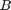 dipenda solo da 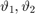, mentre 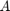 solo da 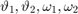 (nessuna delle due dipende dall'effettiva posizione o velocità del carrello)
Per la simulazione converto le matrici e in funzioni che memorizzo rispettivamente in functA.m e functB.m
Q0 = zeros(6, 1); Q0(2) = .01;
Definisco quindi le condizioni iniziali del sistema (tutti sei i parametri di stato, anche se ai nostri interessi servono solo gli angoli delle aste del pendolo)
matlabFunction(functA, 'File', 'functA.m'); matlabFunction(functB, 'File', 'functB.m');
Per linearizzare il sistema scelgo come primo punto di equilibrio la configurazione up-up delle aste, corrispondente quindi a 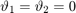, posizione generica 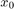 e velocità nulle 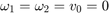
Scelte le condizioni inziali posso usare la formula per l'approssimazione al primo ordine data da
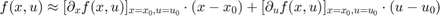
In realtà, dalla struttura di 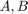 posso osservare che le uniche parti non lineari del sistema sono date dalle sottomatrici 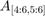 di e 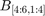 di (usando una notazione simile a quella dell'indicizzazione in MATLAB)
Da questa osservazione, usando la formula sopra riportata per le sole dinamiche non lineari del sistema e svolgendo tutti i calcoli otteniamo l'approssimazione lineare
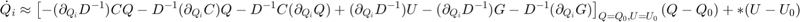
Qeq = Q0' subs(diff(functA, V0), newstates, Qeq) subs(diff(functA, W1), newstates, Qeq) subs(diff(functA, W2), newstates, Qeq)
Qeq =
0 0.0100 0 0 0 0
ans =
[0, 0, 0, 0, 0, 0]
[0, 0, 0, 0, 0, 0]
[0, 0, 0, 0, 0, 0]
[0, 0, 0, 0, 0, 0]
[0, 0, 0, 0, 0, 0]
[0, 0, 0, 0, 0, 0]
ans =
[0, 0, 0, 0, 0, 0]
[0, 0, 0, 0, 0, 0]
[0, 0, 0, 0, 0, 0]
[0, 0, 0, 0, 0, 0]
[0, 0, 0, 0, 0, 0]
[0, 0, 0, 0, 0, 0]
ans =
[0, 0, 0, 0, 0, 0]
[0, 0, 0, 0, 0, 0]
[0, 0, 0, 0, 0, 0]
[0, 0, 0, 0, 0, 0]
[0, 0, 0, 0, 0, 0]
[0, 0, 0, 0, 0, 0]
Notiamo che 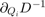, all'equilibrio, è zero per ogni 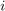
Stesso discorso vale per che, all'equilibrio, è il vettore di soli zeri e per (verificabile con una subs su C)
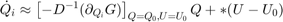
Definisco quindi la matrice per il sistema linearizzato
m = subs(I, [states, constsSym], [Qeq, constsReal]) l = subs(jacobian(G, [x0(t), t1(t), t2(t)]), [states, constsSym], [Qeq, constsReal]) linA = double([ ... zeros(3, 3), eye(3, 3); ... - m * l, zeros(3, 3) ])
m =
[ 242/433, -456/433, -16/433]
[-456/433, 3264/433, -1344/433]
[ -16/433, -1344/433, 22912/3897]
l =
[0, 0, 0]
[0, -49/10, 0]
[0, 0, -441/160]
linA =
0 0 0 1.0000 0 0
0 0 0 0 1.0000 0
0 0 0 0 0 1.0000
0 -5.1603 -0.1018 0 0 0
0 36.9367 -8.5552 0 0 0
0 -15.2092 16.2051 0 0 0
Per quanto riguarda effettuo gli stessi calcoli prendendo derivate parziali rispetto ad 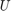 invece di 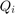
Siccome l'unico termine a moltiplicare è  , la matrice sarà proprio valutata in 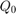
, la matrice sarà proprio valutata in 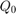
linB = double([zeros(3, 1); m * [1; 0; 0]])
linB =
0
0
0
0.5589
-1.0531
-0.0370
Le matrici 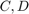 le scelgo come la matrice della sola componente 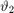 e 0 (non misuro l'ingresso)
linC = [0, 1, zeros(1, 4)] linD = 0
linC =
0 1 0 0 0 0
linD =
0
Converto le matrici del sistema linearizzato nella funzione di trasferimento dell'impianto, usando innanzitutto ss seguito da tf
linPtf = tf(ss(linA, linB, linC, linD)) [linPnum, linPden] = tfdata(linPtf); drawEverythingButSignalResponse(linPtf)
linPtf =
-1.053 s^2 + 17.38
-----------------------------------------------------
s^4 - 4.441e-16 s^3 - 53.14 s^2 + 2.842e-14 s + 468.4
Continuous-time transfer function.
ans =
-1.053 s^2 + 1.216e-14 s + 17.38
----------------------------------------------------
s^4 + 6.35e-14 s^3 - 54.19 s^2 - 2.785e-12 s + 485.8
Continuous-time transfer function.
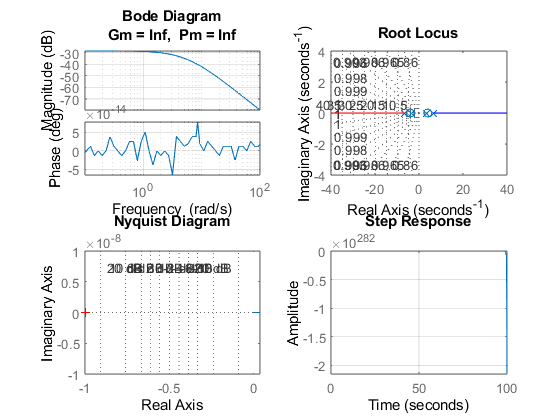 Voglio che il sistema risponda ad errore nullo a riferimenti costanti ed overshoot e settling time più piccoli possibili
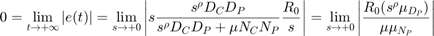
Affinché il limite sopra riportato sia zero scelgo di inserire un polo all'origine nel controllore e, a questo punto, opto per un controllore PID con un polo all'origine (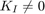)
S = tf('s'); syms s KP KI KD; numC0 = KD * s^2 + KI + KP * s; denC0 = s; [numP, denP] = tfdata(linPtf); numP = poly2sym(cell2sym(numP), s); denP = poly2sym(cell2sym(denP), s); denW0 = expand(numC0 * numP + denC0 * denP); denW0 = coeffs(denW0, s); latex(vpa(myRouth(denW0), 3))
ans =
'\left(\begin{array}{ccc} 17.4\,\mathrm{KI} & 17.4\,\mathrm{KD}-1.05\,\mathrm{KI}+2.84e-14 & -1.05\,\mathrm{KD}-4.44e-16\\ 17.4\,\mathrm{KP}+468.0 & -1.05\,\mathrm{KP}-53.1 & 1.0\\ \frac{17.4\,\mathrm{KI}\,\left(1.05\,\mathrm{KP}+53.1\right)+\left(17.4\,\mathrm{KP}+468.0\right)\,\left(17.4\,\mathrm{KD}-1.05\,\mathrm{KI}+2.84e-14\right)}{17.4\,\mathrm{KP}+468.0} & -\frac{1.0\,\left(17.4\,\mathrm{KI}+\left(1.05\,\mathrm{KD}+4.44e-16\right)\,\left(17.4\,\mathrm{KP}+468.0\right)\right)}{17.4\,\mathrm{KP}+468.0} & 0\\ \frac{\left(17.4\,\mathrm{KP}+468.0\right)\,\left(17.4\,\mathrm{KI}+\left(1.05\,\mathrm{KD}+4.44e-16\right)\,\left(17.4\,\mathrm{KP}+468.0\right)-\frac{1.0\,\left(17.4\,\mathrm{KI}\,\left(1.05\,\mathrm{KP}+53.1\right)+\left(17.4\,\mathrm{KP}+468.0\right)\,\left(17.4\,\mathrm{KD}-1.05\,\mathrm{KI}+2.84e-14\right)\right)\,\left(1.05\,\mathrm{KP}+53.1\right)}{17.4\,\mathrm{KP}+468.0}\right)}{17.4\,\mathrm{KI}\,\left(1.05\,\mathrm{KP}+53.1\right)+\left(17.4\,\mathrm{KP}+468.0\right)\,\left(17.4\,\mathrm{KD}-1.05\,\mathrm{KI}+2.84e-14\right)} & 1.0 & 0\\ -\frac{2.05e-19\,\left(2.61e+69\,{\mathrm{KD}}^2\,\mathrm{KP}+7.05e+70\,{\mathrm{KD}}^2+1.58e+68\,\mathrm{KD}\,\mathrm{KI}\,\mathrm{KP}+7.99e+69\,\mathrm{KD}\,\mathrm{KI}+4.05e+53\,\mathrm{KD}\,{\mathrm{KP}}^2+2.08e+55\,\mathrm{KD}\,\mathrm{KP}+2.68e+56\,\mathrm{KD}+1.5e+68\,{\mathrm{KI}}^2+4.51e+53\,\mathrm{KI}\,\mathrm{KP}+4.69e+54\,\mathrm{KI}+1.71e+38\,{\mathrm{KP}}^2+6.3e+38\,\mathrm{KP}-1.07e+41\right)}{4.12e+52\,\mathrm{KD}+3.01e+51\,\mathrm{KI}+6.75e+36\,\mathrm{KP}+7.88e+34\,{\mathrm{KP}}^2+1.53e+51\,\mathrm{KD}\,\mathrm{KP}+3.09e+49\,\mathrm{KI}\,\mathrm{KP}+1.25e+38} & 0 & 0\\ 1.0 & 0 & 0 \end{array}\right)'
Dalla tabella di Routh possiamo osservare che affinché la prima colonna sia positiva dovremmo avere 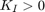, 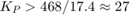